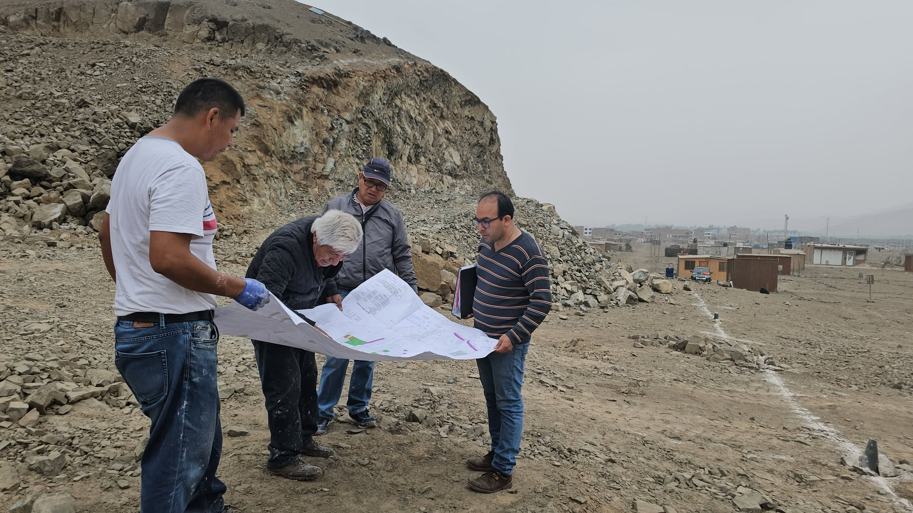
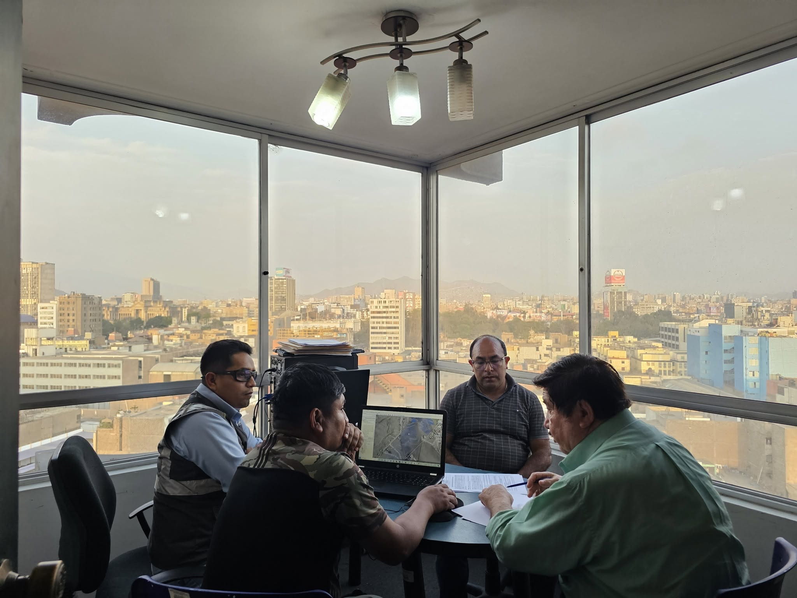
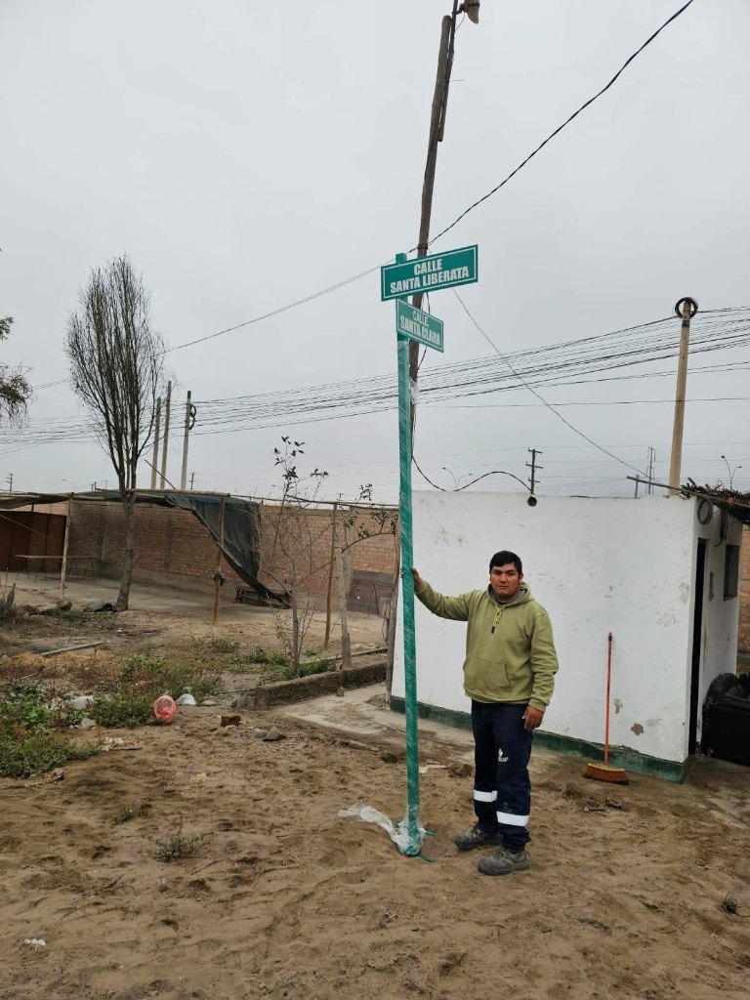
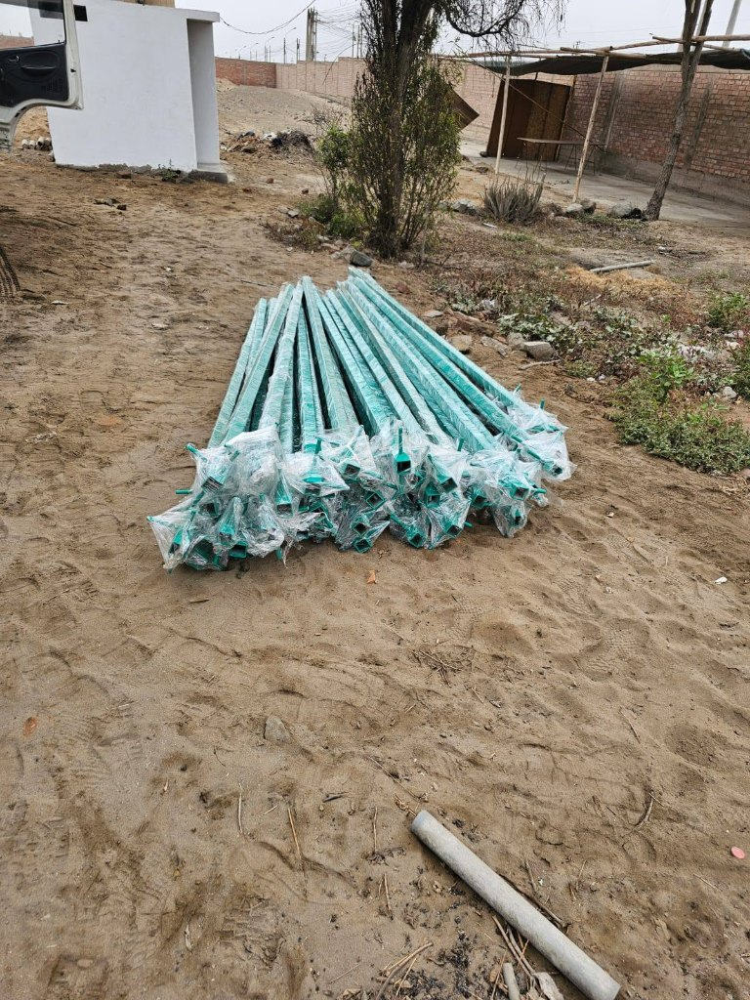
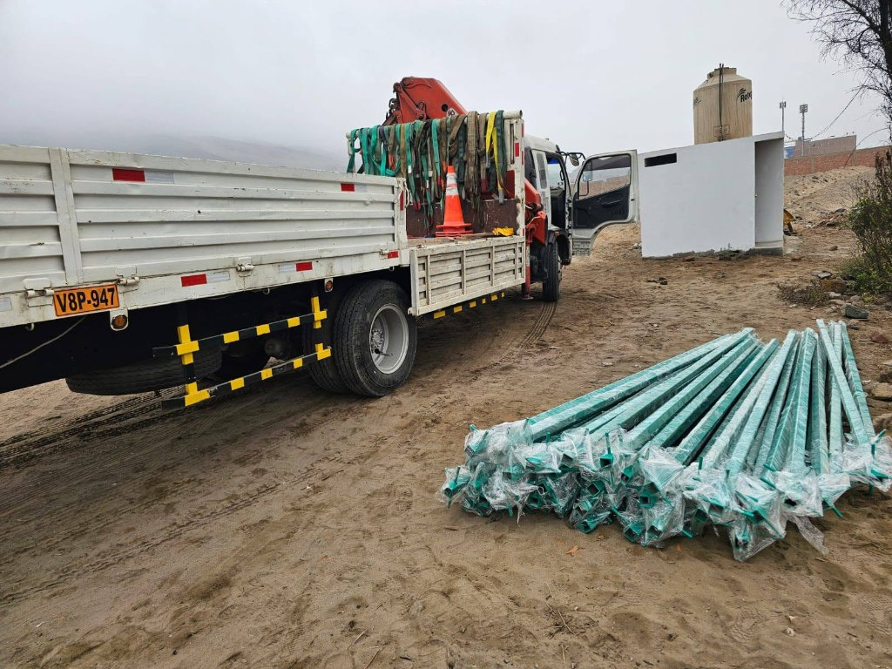

Nuestros proyectos
Proyectos en desarrollo
Actualmente nuestra comunidad continúa trabajando en proyectos orientados a mejorar los servicios, infraestructura y espacios para nuestros asociados.

Electrificación definitiva
Un proyecto de infraestructura clave para avanzar hacia un servicio eléctrico definitivo en AVILORETO y beneficiar a aproximadamente 2,000 familias.
Conoce cómo surgió, las gestiones con PLUZ, la inversión y los avances de la obra.
Conoce esta obra
Centro Recreacional
Un espacio para el deporte, la recreación y las actividades comunitarias de los asociados y sus familias.
Conoce sus instalaciones, la cancha deportiva y el Local Multiusos, junto con los avances de su construcción.
Conoce este proyecto
Ampliación para habilitación urbana
Como parte de la ampliación de la habilitación urbana, la asociación ha realizado trabajos de apertura y ampliación de vías para 400 lotes, en beneficio de sus asociados y copropietarios.
Estas obras se financian mediante una cuota extraordinaria de S/ 4,000 por copropietario.
Contribuir al desarrollo y acondicionamiento del área destinada a la futura habilitación urbana.
Proyectos / Obras
Apertura de vías
La apertura de vías permite el acceso a servicios básicos y recreativos. Esta mejora beneficia a personas con discapacidad, adultos mayores, niños y mujeres embarazadas.
Durante 2024 y 2025 se abrieron vías entre las manzanas 34 y 41 para levantar observaciones formuladas por PLUZ. La inversión realizada superó los S/ 120,000.




En 2025 se instalaron letreros metálicos en avenidas y calles para facilitar la orientación y ubicación de los lotes. Las imágenes muestran la instalación y el acopio de los postes de señalización.
También se reubicó el acceso y se construyó un pórtico de aproximadamente 24 metros de ancho, con cuatro puertas metálicas, para ordenar el ingreso a la asociación.


